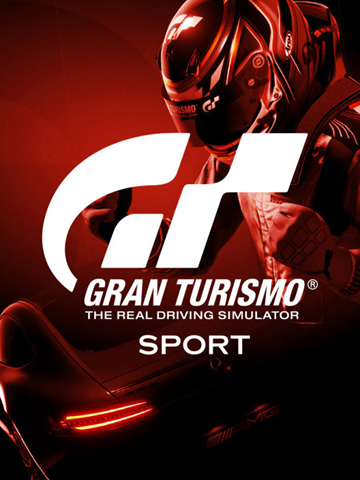
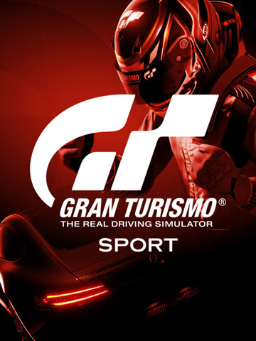

God of War Ragnarök é um jogo eletrônico de ação-aventura desenvolvido pela Santa Monica Studio e publicado pela Sony Interactive Entertainment. Foi lançado em 9 de novembro de 2022 para PlayStation 4 e PlayStation 5. É o nono título da série God of War, o nono em ordem cronológica, e a sequência de God of War.
The Last of Us é uma franquia de jogos eletrônicos de ação-aventura e survival horror exclusiva da PlayStation, criada por Neil Druckmann. A franquia é situada em um mundo pós-apocalíptico, com seres humanos hostis e criaturas canibais infectadas por uma mutação do fungo cordyceps.
Elden Ring é um jogo eletrônico de RPG de ação em terceira pessoa, desenvolvido pela FromSoftware e publicado pela Bandai Namco Entertainment. O jogo é um projeto colaborativo entre o diretor Hidetaka Miyazaki e o romancista de fantasia George R. R. Martin.
Gran Turismo é uma popular e aclamada série de videojogos de corrida automóvel produzida pela Polyphony Digital, um estúdio que com o passar do tempo se dedicou a desenvolver basicamente somente este titulo.


 
